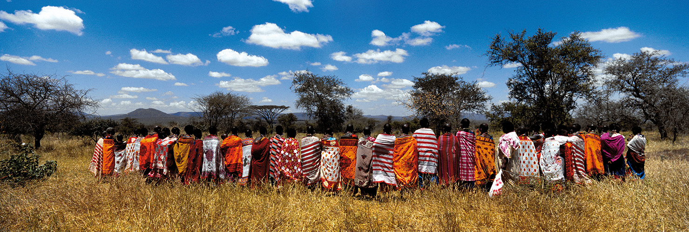
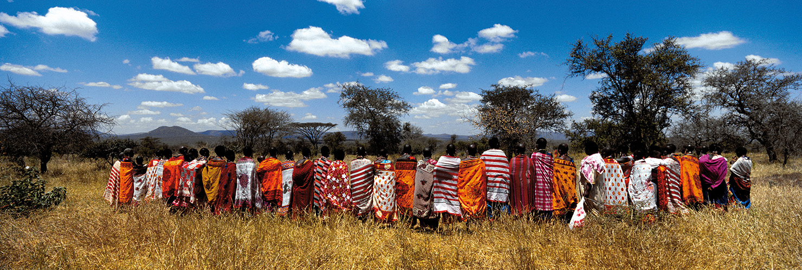
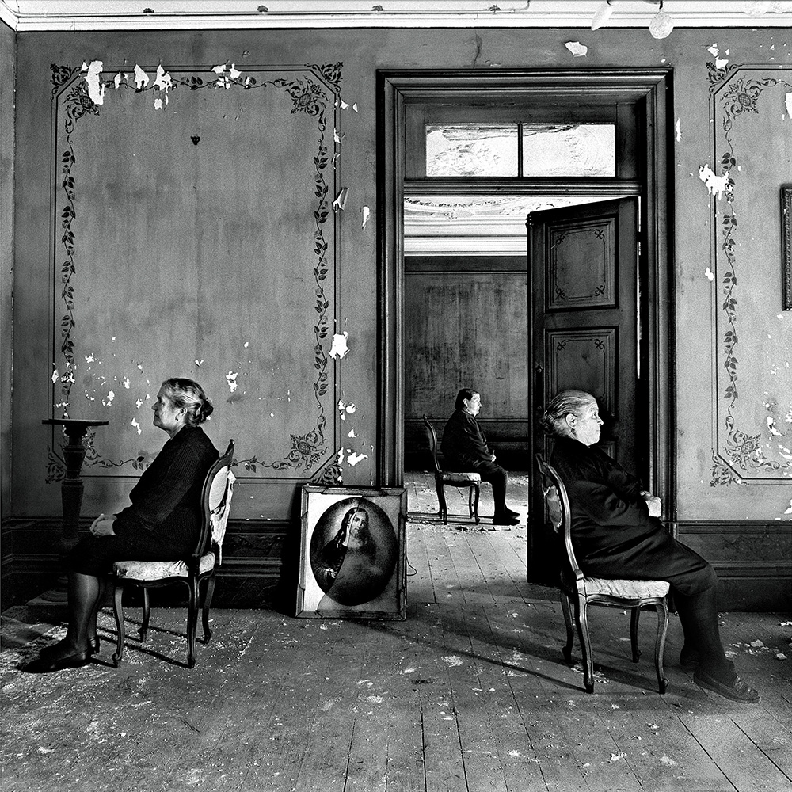
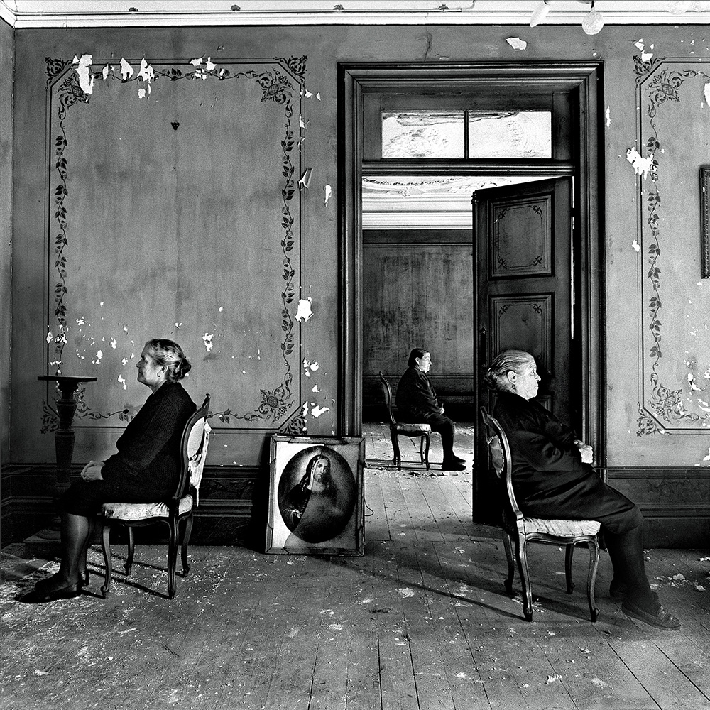

Morten Krogvold
Photograph, author, lecturer and host
About
Krogvold is particullary known for his black & white portraits by artists, politicans and other famous personalities, but his motives also consists nature and elder classic arcitechur.
Stille lys & Kvinner CARE

 


 
